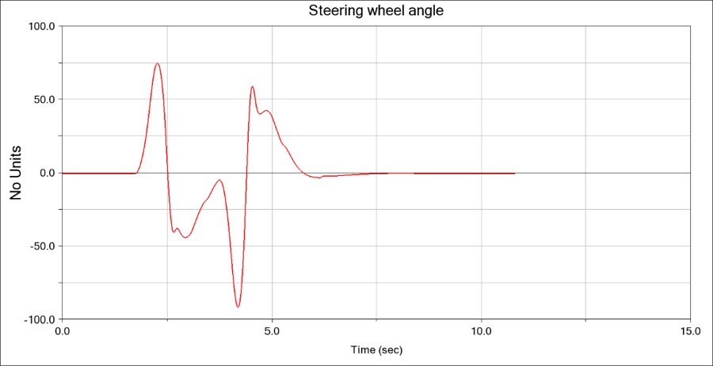

Vehicle Dynamics and Control
 A full-vehicle dynamics study of a race car developed for the "Vehicle Dynamics and Control" course at Politecnico di Milano, spanning tire characterization, longitudinal/lateral/vertical dynamics, multibody simulation, and lap-time simulation. Starting from a combined-slip tire model, the study builds up through longitudinal traction and braking control, ride comfort analysis of semi-active and active suspensions across ISO road classes, and linear single-track stability analysis (roll stiffness distribution, eigenvalue/eigenvector analysis) into full nonlinear handling maneuvers (steering pad, step steer, sine dwell, double lane change, sine sweep).
A full-vehicle dynamics study of a race car developed for the "Vehicle Dynamics and Control" course at Politecnico di Milano, spanning tire characterization, longitudinal/lateral/vertical dynamics, multibody simulation, and lap-time simulation. Starting from a combined-slip tire model, the study builds up through longitudinal traction and braking control, ride comfort analysis of semi-active and active suspensions across ISO road classes, and linear single-track stability analysis (roll stiffness distribution, eigenvalue/eigenvector analysis) into full nonlinear handling maneuvers (steering pad, step steer, sine dwell, double lane change, sine sweep).
The kinematic and compliance behavior of the suspension was then modeled and optimized in ADAMS/Car, before validating the full vehicle in ADAMS multibody simulations under step steer, single/double lane change and constant-radius cornering maneuvers. The project concluded with a VI-Grade lap simulation on a full circuit, studying the effect of front/rear anti-roll bar configuration and aerodynamic balance (front/rear downforce distribution) on lap trajectory, downforce, and lateral dynamics.
Tools and Technologies
- Simulation & Modeling: MATLAB/Simulink (tire, longitudinal, lateral and vertical dynamics), ADAMS/Car (suspension kinematics & compliance), ADAMS Full Vehicle, VI-Grade (lap simulation)
- Key Concepts: Combined-slip tire modeling, ride comfort & semi-active/active suspension control, single-track stability analysis, handling maneuvers, aero balance sensitivity